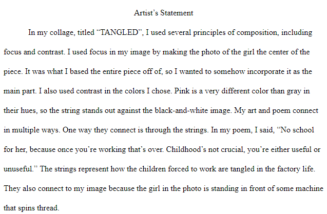
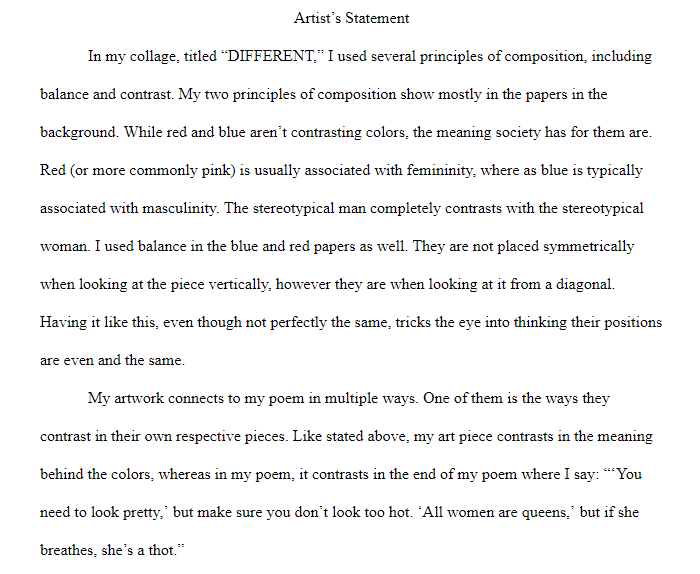

In Humanities, we connected the project to the topic through child labor and modern inventions like social media. For both topics, I had to write a poem, create an art piece based off that poem, and write a relfection on those.
Sweat drips down the browline
Of a quiet young Fraulein
But until her boss says she can go home
She works herself to the bone
Her family needs the money
For business that’s anything but funny
They might die without being able to pay for bread
But her daily work is what she dreads
Children who don’t work are one to none
But she still works herself to the bone
No school for her,
Because once you’re working that’s over
Childhood’s not crucial,
You’re either useful or unuseful
And although she lets out a painful moan
She still works herself to the bone
Her tired eyes droop with the weight of sleep
Awake is what she aims to keep
The string is a familiar enemy
Against her, her boss must hold an enmity
She lets out a light sigh and a quiet grown
As she continues to work herself to the bone
Hugging me just right
Not too loose or too tight
I think you’re beautiful
But others look at you like you’re pitiful
Is it because of my chest?
Maybe my hips or my thighs?
I don’t think I look a mess,
So why is that where they rest their eyes?
Right, I’m a woman
All that matters is my boobs
All that matters are my legs
That’s all that’s true, man
“You need to look pretty”
But make sure you don’t look too hot
“All women are queens”
But if she breathes, she’s a thot
